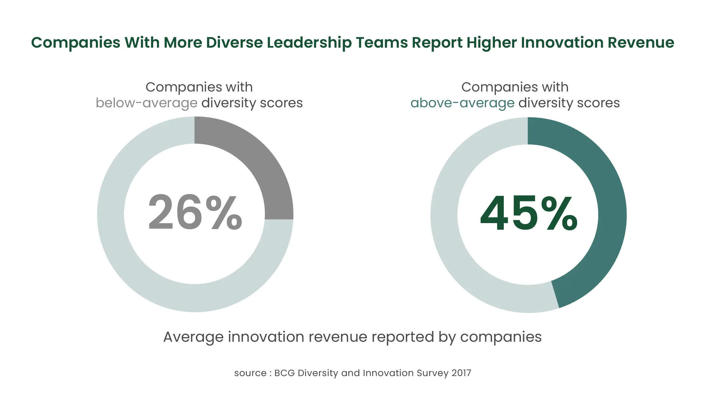

Over the past centuries, society has made significant progress from the era of the slave trade to the establishment of equal rights. The corporate world has contributed its share towards an equitable society by applying progressive policies and improving workplace diversity. We are yet to see the boards and management teams of companies reflecting the diversity of their immediate society. Boards of most global corporations are significantly white male-heavy, keeping considerable room for progress.
Gender diversity is in the mainstream, and there are firm commitments by private sector companies and affirmative action programs by governments worldwide to promote female participation in the workforce. With regulations mandating female representation on board [ Iceland and France (40%), Norway (at least 40%, depending on the size of the board), Italy (33%), and Germany (30%)], we have seen improvement in board diversity. Between 2006 to 2023, the gender gap closed by 68.8%, as per the Global Gender Gap Report 2023, published annually by the World Economic Forum (WEF). Despite considerable progress, a lot needs to be done; with the same performance, it would take 131 more years to achieve gender parity.
In addition to gender, numerous other dimensions of diversity demand our attention, spanning beyond race, ethnicity, gender, and sexual orientation.
Embracing diversity and fostering inclusion in the workplace is not only a moral obligation but also a strategic imperative for companies aiming to achieve long-term success.
Diversity promotes innovation and impacts financial performance
When employees from diverse backgrounds, experiences, and perspectives come together, they bring a vast array of ideas and insights to the table. This diverse pool of ideas sparks creativity, encourages out-of-the-box thinking, and leads to innovative solutions to business challenges. Such innovation can give companies a competitive edge in their markets and drive them towards sustainable growth.
According to the BCG Diversity and Innovation Survey 2017, companies with higher management diversity have a positive relationship with innovation. The study used innovation revenue as a proxy to measure innovation and found that companies with above-average diversity in management teams created 19 percentage points more innovation revenue than those with below-average management diversity.
{kind=link}

Companies are more likely to perform better financially through a diverse management team than companies with less diversity. This relation is valid for gender as well as ethnic and cultural diversity. According to a McKinsey report based on a review of more than 1000 companies from 15 countries over 5 years (2014 to 2019), companies with over 30% women executives outperformed those with 10-30% or fewer women executives. The difference in outperformance likelihood between the most and least gender-diverse companies is significant at 48 percentage points. In 2019, companies with high ethnic and cultural diversity outperformed those with lower ethnic and cultural diversity by 36% in profitability.
Diversity builds resilience and adaptiveness
Diversity fosters resilience by preventing system breakdowns and enables adaptiveness by facilitating learning and evolution. It allows an organization to withstand changing environments while providing a range of problem-solving approaches for effective decision-making. Embracing diversity allows for the comparison of multiple ideas and actions, ultimately leading to the selection of the most effective ones.
Attracting top talent
A diverse and inclusive workplace is a magnet for top talent. In a competitive job market, potential employees are increasingly seeking companies that prioritize diversity and offer an inclusive environment. A diverse workforce sends a positive message to job seekers, making the organization more attractive and leading to a larger pool of qualified candidates from which to choose. Additionally, companies that value diversity tend to retain talent better, leading to a reduction in turnover and the associated costs of recruitment and training.
Mitigating Legal and Reputational Risks
Ignoring diversity and inclusivity can expose businesses to legal and reputational risks. Discriminatory practices can lead to costly lawsuits, damage a company's reputation, and alienate customers and potential partners. Embracing diversity and implementing fair and inclusive policies help mitigate these risks, creating a positive brand image and ensuring compliance with legal and ethical standards.
When striving to improve diversity, it's important for companies to also prioritize inclusivity. Fostering inclusivity within a company requires a purposeful and concerted effort to create an environment where all employees feel respected, valued, and empowered to contribute fully.
Here are some key ways for companies to promote inclusivity:
- Develop and communicate an Inclusive Vision: Company leadership should articulate a clear and compelling vision that emphasizes the importance of inclusivity. This vision should be communicated throughout the organization to create a shared understanding of the company's commitment to fostering an inclusive culture.
-
Establish inclusive policies and practices: Companies should implement inclusive policies and practices that promote diversity and equal opportunities. This includes fair hiring practices, unbiased performance evaluations, and policies that support work-life balance and diversity in leadership roles.
- For example, ensuring diversity in the hiring panel: Having a diverse pool of candidates is as important as having a diverse interview panel. This would reflect companies' inclusiveness to upcoming employees.
- Mentorship and Sponsorship Programs: A mentorship program that is well-designed, with clear expectations for both mentors and mentees, and emphasizing interactive and reciprocal learning, can significantly enhance inclusivity. These programs can provide guidance, support, and networking opportunities for career growth.
- Address Discrimination and Harassment Promptly: Create a zero-tolerance policy for discrimination and harassment. Ensure that all reports of such incidents are taken seriously and promptly addressed through appropriate channels.
With increasing focus on ESG across the world amongst the critical stakeholders, the scrutiny for diversity and inclusion is larger than before. So, it is time to ensure companies take strategic measures to create a more diverse & inclusive workplace.